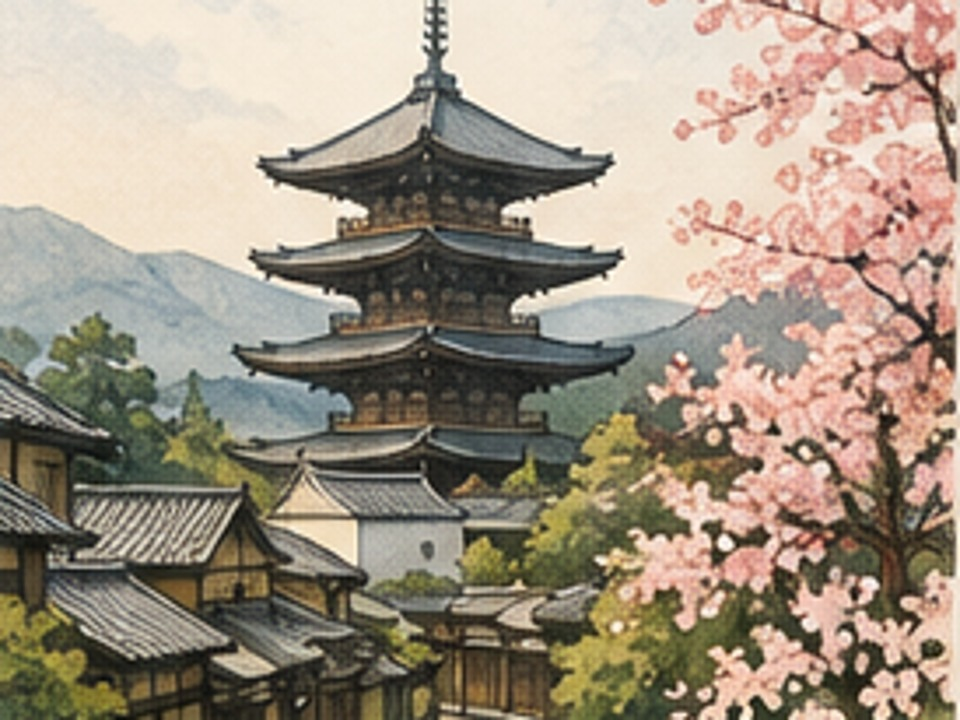

京都
Kyoto
Templi, giardini e antiche tradizioni

Dove siamo
Nella regione del Kansai, sull’isola di Honshū.
Lo sapevi che?
Kyoto è stata capitale imperiale del Giappone per oltre mille anni ed è famosa per templi, santuari, giardini e quartieri storici.
Perché è speciale
È uno dei luoghi migliori per incontrare il Giappone tradizionale.
Una parola giapponese
寺 — tera
Tempio buddhista
La domanda del viaggiatore
Per quanto tempo Kyoto è stata capitale del Giappone?
✓ Tappa completata
← Torna al viaggio